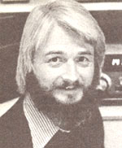

The author of this column, who has been writing for MOTHER since 1973, is the inventor of slow-scan television . . . a method of amateur radio transmission that allows ham operators to bout hear and see each other during shortwave broadcasts.
A while back Harry Spetla (KA2DRE) suggested that we publish a directory of NDR hams and other folks who are sympathetic with the aims of New Directions Radio. Such a document could-for one thing-serve as a handy reference to our radio friends' names, addresses, and phone numbers. But beyond that, if the book included notes on each individual's interests and areas of competence, it would help people locate others with common concerns and/or with expertise in specific fields.
We've discussed the idea on the air, and a plan of action has begun to jell. Since demand for the booklet is likely to be high enough to require printing several hundred copies, we've decided that the project should be a nonprofit, volunteer, group endeavor. Perhaps if we spread the work out among a number of people, the guide will become a labor of love for many rather than one of drudgery for just a few.
Harry is coordinating the job, managing the money, and-with the help of Bob Robinson (K1PRR)-handling production. Lee Branum (KL7IJG) is sending radio messages to people whose addresses we already have and who are likely to want to be listed in the directory. Meanwhile, I'll be taking on the editorial chores, typing the information into my computer and turning out the camera-ready copy to be printed.
Of course, we may well need more volunteers . . . particularly people who might be able to arrange local printing, or who are willing to help collate and staple pages or stamp and mail envelopes. And, naturally, we also need contributions to help cover our startup costs. We're not sure-at this point -just what the postpaid price of the book will be, but donations made to the New Directions Radio Directory Project will be credited (gratefully) toward your purchase of a copy. If you'd like to help in any way, send your check and/or offer of assistance to Harry Spetla, Dept. TMEN, RD 1, Box 185, Hoosick Falls, New York 12090.
What I need from you folks, of course, is the information about yourselves that you'd like to have published in the guide. Although the directory itself will cost some money, a listing in it-with your name, address, phone number, and (if you're a ham operator) call letters, plus up to 100 words of self-description-is free.
Now what kind of information, exactly, should you include in your "blurb"? Well, you hams might begin with a statement of your station's capabilities (not necessarily a long list of equipment, but enough informa tion to let other operators know what sort of on-air skeds are possible). Furthermore, you might mention your major interests . . . including the subjects you'd most like to discuss with others on the air. And finally, why not include a sentence or two on the kinds of help you're prepared to other to others, and any skills or information that you'd be willing to share.
Here's a strictly hypothetical listing, just to give you a better idea of the general format we're looking for:
John A. Hamm, WA4XYZ
100 Main Street
Anytown, Anystate 33333
111/111-1111
Can operate QRP CW on 80-10 meter General Class frequencies. I like gardening, and experiment with nonchemical pest control. I'm also trying meditation and am interested in all paths to personal/spiritual growth. I work as a mechanical engineer and could help with solar collector design. Would also be glad to help others obtain their ham licenses.
Please do give a little time and thought to what you say in your listing. Try to include things that are really important to you-that get you excited-plus any other information that you think will be helpful to users of the guide. Also, do your best to keep your description within the 100-word limit. . . or I may have to take my editorial hedge clippers to it. And last but not least, send your listing to me as soon as possible-no later than Christmas-so that we can meet our deadline: We're going to try to get copies of the New Directions Radio Directory in the mail this spring!
Are we all being inundated by too much information these days? Well, certainly the sheer volume of data available to us continues to grow all the time. And if you and I had to dig through the entire mass just to get to the relatively tiny percentage that we'd find of real value, we would be completely overwhelmed.
We hams face a similar problem . . . that is, the airwaves spectrum is crowded and becoming more so all the time. So we build filters into our receivers, to allow only the parts in which we're most interested to get through. We need effective filters in other areas of our lives too . . . so that we can tune in the most important items and sort out the informational QRM.
Well, there are such filters . . . they're called good editors. No matter what your area of interest may be, there's likely to be at least one specialized journal that's staffed by people whose outlook and concerns are similar to yours. And subscribing to such a publication can be like having your own private crew of researchers working long hours to sort the informational raisins from the bran flakes, all just for you.
MOTHER is a good example of such a magazine. She brought us together, after all, and-for a small yearly fee-keeps feeding us lots of well-selected, well-edited articles on interesting subjects.
And since MOTHER'S readers do seem to be a like-minded bunch, I thought I'd mention three other publications that I find valuable . . . and think you might, too.
The first two-Brain/Mind Bulletin and Leading Edge: A Bulletin of Social Trapsfermation-are edited and published by Mar ilyn Ferguson, who is the author of The Aquarian Conspiracy.
Brain/Mind Bulletin (Dept . TMEN, P.O. Box 42211, Los Angeles, California 90042) presents research results concerning-and book reviews on-psychology, parapsychology, and brain physiology. Recent issues, for example, included excellent reporting of right- and left-brain phenomena and wholistic theories of matter and consciousness.
Leading Edge Bulletin (Dept. TMEN, P.O. Box 42247, Los Angeles, California 90042) reports new approaches to upgrading human culture in many areas-politics, relationships, business, education, and much more-with a focus on the people who are creating change in society. One fine recent article, for instance, discussed the ongoing peace movement within the U.S. military.
Each of these periodicals is published once every three weeks and costs $20 for a one-year (17-issue) subscription.
Another of my key sources of information is the Review of International Broadcasting . . . which helps bring order out of the multinational, multilingual chaos that shot twave listening can become. By distilling reports from many listeners, the publication spares us the chaff and leads us to the wheat. A one-year (12-issue) subscription is available for $15 from Glenn Hauser Dept. TMEN, P.O. Box 6287 Knoxville I Tennessee 37911.
Peace,
Cop Macdonald (VEBFL.)
P.O. Box 2941
Charlottetown
Prince Edward Island
Canada C1A 8C5
New Directions Radio is an international network of radio amateurs concerned with those ways of using ham radio (and related modes of communicating) that promote our own growth as individuals, acrd that zee per as helping to create a prate aware, more caring, and more responsible human society. We encourage all who share these interest to work with us. A current schedule of on-the-air activities is included in each issue of the bi monthly New Directions Roundtable News-letter, published by Art Mourad (WB2POB) as a service to the rest of us. To subscribe, send 25 cents for each issue desired to Art Mourad, Dept. TMEN, P.O. Box 787, Bergenfield New Jersey 07621.
|
 |
|
|